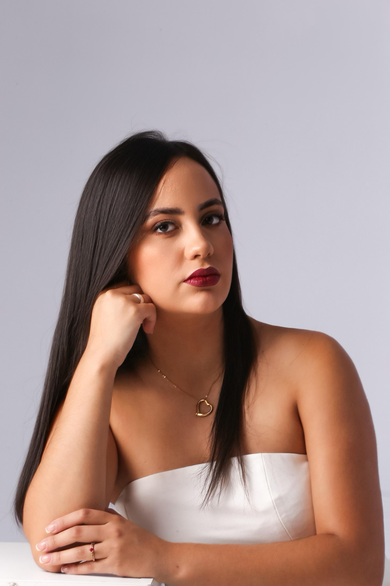
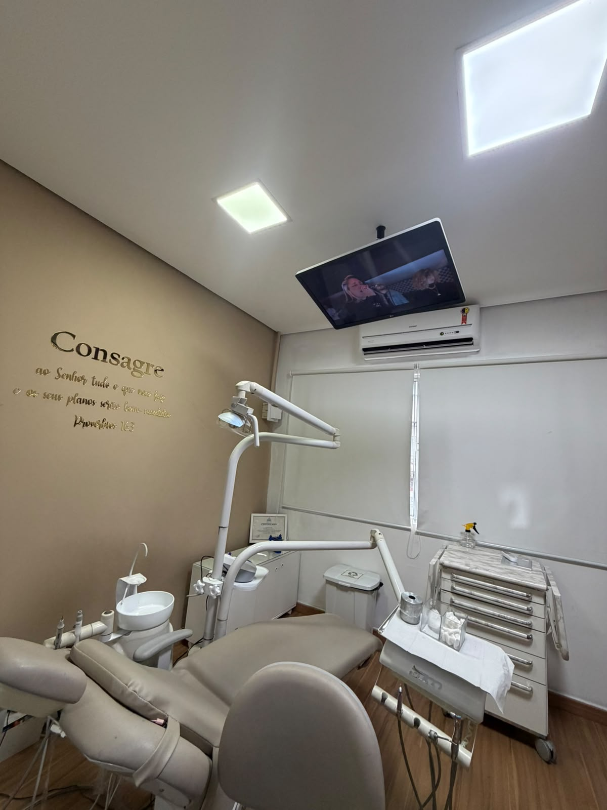
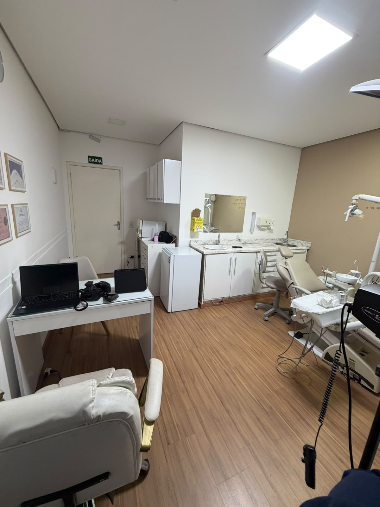

Humanização
Atendimento atencioso, respeitando as necessidades de cada paciente.
 Dra. Mileny Santos
Cirurgiã-dentista
Agende sua consulta
Dra. Mileny Santos
Cirurgiã-dentista
Agende sua consulta

Nossa profissional
Com foco em oferecer o melhor para seus pacientes, a Dra. Mileny Santos une sua paixão pela odontologia à busca constante por atualização.
Cirurgiã-dentista, inscrita no CRO-SP 155.024, acredita que a saúde bucal é uma parte essencial da autoestima, do bem-estar e da qualidade de vida.
Seu consultório foi pensado para oferecer um ambiente acolhedor, onde cada paciente recebe atenção individualizada e um plano de tratamento transparente.
A proposta é unir tecnologia, cuidado e atenção aos detalhes para proporcionar uma experiência confortável e segura em cada atendimento.
Nosso espaço
Cada detalhe do consultório foi pensado para proporcionar conforto, tranquilidade e acolhimento durante sua consulta.


Nosso compromisso
Atendimento atencioso, respeitando as necessidades de cada paciente.
Atenção individualizada em cada etapa do seu tratamento.
Compromisso com a qualidade e a atualização profissional.
Estamos esperando por você
Entre em contato e agende sua consulta. Será um prazer receber você!
Agendar pelo WhatsApp